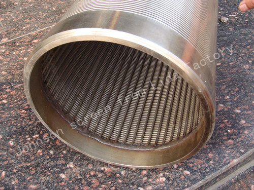
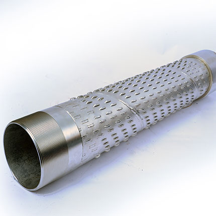
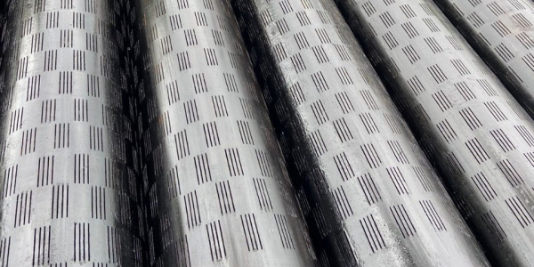
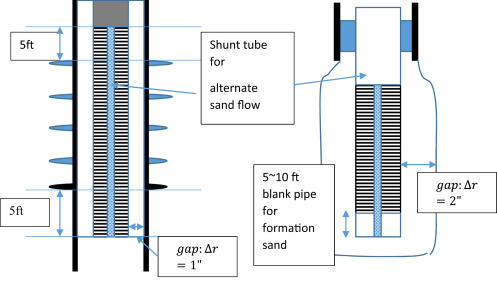
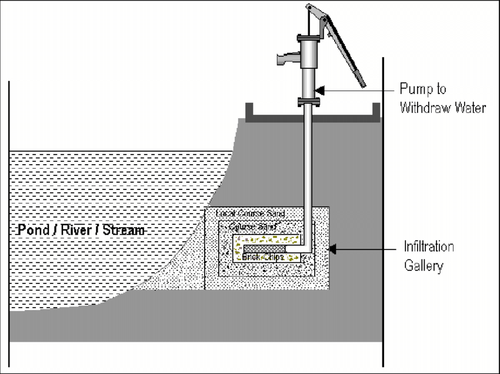
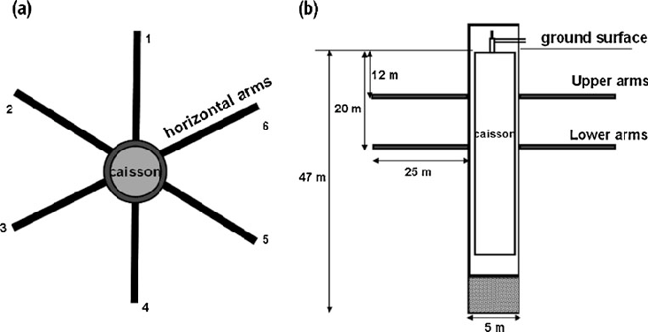

CHAPTER ROADMAP
- Introduction — types of water wells
- Open wells
- Tube wells
- Comparison of open wells and tube wells
- Recuperation test on open wells
- Yield of open wells
- Design of tube wells
- Well screens
- Gravel pack
- Well development and maintenance
- Infiltration galleries
- Radial collector wells (Ranney wells)
- Past question bank for Chapter 7
- Chapter summary and exam formula sheet
7.1 INTRODUCTION — TYPES OF WATER WELLS
PAST EXAM QUESTIONS ADDRESSED:
2073 Bhadra Q8(a) [3]: Differentiate between open well and tube well.
2072 Ashwin Q10 [4+2]: What do you mean by a tube well? Explain different types of tube well with figure.
A water well is a structure created by digging, drilling, or driving into the ground to access groundwater from aquifers. Wells are the primary means of extracting groundwater for domestic, agricultural, and industrial use. The design and type of well depends on the geological conditions, depth to water table, required yield, and available resources.
Wells can be broadly classified as:
- Open wells (dug wells) — large diameter, shallow depth
- Tube wells (drilled wells) — small diameter, greater depth
- Driven wells — small diameter pipes driven into soft formations
- Bored wells — constructed using hand or power augers
- Jetted wells — constructed by jetting water to wash away soil
For the IOE syllabus, the focus is on open wells and tube wells, which are the two most important types.
7.2 OPEN WELLS (DUG WELLS)
Open wells (also called dug wells) are the oldest and simplest type of groundwater structures. They are excavated by manual digging or mechanical means to a depth below the water table.
7.2.1 Description and Construction
- Diameter: Typically 2 to 8 m
- Depth: Usually 5 to 20 m (limited to shallow aquifers)
- Shape: Circular (most common), rectangular, or square
- Lining: Brick masonry, stone masonry, concrete rings, or RCC lining (to prevent collapse)
- Water entry: Through the bottom and/or through porous lining on the sides
7.2.2 Types of Open Wells
(a) Unlined Open Wells (Kutcha Wells)
Temporary wells without any lining. Water enters from all sides and the bottom. Used in areas with stable soil (clay or stiff formations). Prone to collapse in loose sandy soils.
(b) Lined Open Wells (Pucca Wells)
Permanent wells with masonry or concrete lining. The lining provides structural support and prevents contamination from surface water. They may have:
- Pervious lining: Dry brick or stone masonry without mortar in the water-bearing zone, allowing water to enter through the sides
- Impervious lining: Cement-mortared masonry in the upper portion to prevent entry of contaminated surface water
(c) Dug-cum-Bore Well
An open well with one or more bores (small-diameter pipes) drilled at the bottom, extending into deeper aquifer zones. This increases the yield significantly by tapping deeper water-bearing formations. It combines the storage advantage of an open well with the deeper access of a tube well.
7.2.3 Advantages and Limitations of Open Wells
- Simple construction — can be built with local labour
- Low construction cost for shallow aquifers
- Provides storage within the well itself
- Easy to clean and maintain
- Suitable for hand-operated lifting devices
- Limited to shallow aquifers (< 20 m)
- Low yield compared to tube wells
- Susceptible to contamination from surface
- Affected by seasonal water table fluctuations
- Large land area required for construction
7.3 TUBE WELLS (DRILLED WELLS)
PAST EXAM QUESTIONS ADDRESSED:
2072 Ashwin Q10 [4+2]: What do you mean by a tube well? Explain different types of tube well with figure.
A tube well is a well constructed by drilling or boring a hole into the ground and installing a casing pipe with a screen section that allows water to enter from the aquifer. Tube wells can reach much greater depths than open wells and are the primary method of groundwater extraction for large-scale water supply and irrigation.
7.3.1 Components of a Tube Well
- Casing pipe: Steel or PVC pipe that lines the borehole and prevents collapse. It is impervious in the non-aquifer zones.
- Well screen: Slotted or perforated section of the casing placed opposite the aquifer to allow water entry while excluding sand particles.
- Gravel pack: Graded gravel placed around the screen to improve hydraulic efficiency and filter fine particles.
- Sanitary seal: Cement grout placed around the upper casing to prevent surface contamination.
- Pump housing: Section above the screen that houses the pump intake.
7.3.2 Types of Tube Wells
(a) Strainer Tube Well
Used in alluvial formations (sand and gravel). A strainer (well screen) is placed in the aquifer zone to filter out sand while allowing water to enter. This is the most common type in the Terai region of Nepal.
(b) Cavity Tube Well
Used in areas where a thin layer of sand aquifer is confined between two clay layers. No screen is used. Instead, a cavity is created at the bottom by pumping out sand along with water, forming a natural cavity in the sand layer. Suitable for shallow confined aquifers with moderate yield.
(c) Slotted Tube Well
Similar to strainer type but uses factory-cut slots in the casing pipe instead of a wire-wound screen. Less efficient but cheaper than strainer type.
7.3.3 Advantages and Limitations of Tube Wells
- Can reach deep aquifers (> 300 m)
- High yield (up to hundreds of m³/hr)
- Small footprint (land area)
- Less susceptible to surface contamination
- Can be designed for multiple aquifer zones
- High construction cost (drilling + casing)
- Requires specialized equipment and expertise
- Dependent on electricity for pumping
- Difficult to clean and rehabilitate
- Screen clogging can reduce yield over time
7.4 COMPARISON OF OPEN WELLS AND TUBE WELLS
PAST EXAM QUESTION ADDRESSED:
2073 Bhadra Q8(a) [3]: Differentiate between open well and tube well.
| Feature | Open Well | Tube Well |
|---|---|---|
| Diameter | 1–10 m (large) | 100–600 mm (small) |
| Depth | 5–20 m (shallow) | Up to 500+ m (deep) |
| Construction | Manual digging + masonry lining | Rotary/percussion drilling + casing |
| Water entry | Through bottom and pervious sides | Through well screen along depth |
| Yield | 3–6 L/s (low to moderate) | Up to 200 L/s (moderate to high) |
| Yield depends on | Cross-sectional area (A = πD²/4) | Screen length and aquifer properties |
| Yield test | Recuperation test | Pumping test |
| Aquifer type | Unconfined, shallow | Confined or unconfined, any depth |
| Cost | Low (local materials and labour) | High (drilling rig, casing, pump) |
| Contamination risk | High (open to surface) | Low (sealed at surface) |
| Yield formula | \( Q = C \times A \times H \) | Theis / Cooper-Jacob equations |
7.5 RECUPERATION TEST ON OPEN WELLS
PAST EXAM QUESTIONS ADDRESSED (NUMERICAL):
2078 Chaitra Q7 [6]: Recuperation test: s1 = 4 m, rise = 2.2 m, T = 90 min. Find specific yield. Yield from 5 m well at 2.5 m depression.
2073 Bhadra Q8(b) [2+2+3]: s1 = 3 m, rise = 1.75 m, T = 75 min. Find C, Q (D=5m, H=2.5m), and D for Q=12 L/s at H=2m.
2071 Bhadra Q10 [3+3+4]: Identical to 2073 Bhadra Q8(b).
7.5.1 Purpose and Procedure
The recuperation test (or recovery test for open wells) is conducted to determine the specific yield of an open well. The specific yield (C) is a measure of the aquifer’s capacity to supply water to the well per unit area per unit depression head.
Procedure:
- Note the static water level (SWL) in the well before pumping
- Pump (or bail) water out of the well to depress the water level below SWL by a known amount (s1)
- Stop pumping and allow the well to recuperate (recover)
- After a measured time period (T), note the new water level. The rise in water level gives s2 = s1 − rise
- Use the formula to calculate specific yield C
7.5.2 Theory and Derivation
The recuperation test is based on the assumption that the rate of water inflow into the well is proportional to the depression head:
where V = volume of water in the well, A = cross-sectional area, s = depression head at time t, and C = specific yield.
Since \( dV = A \cdot ds \) (increase in volume = area × rise in water level), and noting that as the well recovers, the depression head decreases:
Integrating from t = 0 (when s = s1) to t = T (when s = s2):
Therefore, the specific yield is:
where:
- \( s_1 \) = initial depression head (m)
- \( s_2 = s_1 - \text{rise} \) = depression head after time T (m)
- \( T \) = recovery time (in hours — must convert from minutes!)
- \( C \) = specific yield (per hour)
7.6 YIELD OF OPEN WELLS
Once the specific yield (C) is determined from the recuperation test, the yield (discharge) of any open well in the same aquifer can be estimated using:
where:
- \( Q \) = yield of the well (m³/hr)
- \( C \) = specific yield from recuperation test (per hour)
- \( A = \frac{\pi}{4} D^2 \) = cross-sectional area of the well (m²)
- \( H \) = operating depression head (m) — the depression head under which the well is to operate
7.6.1 Design of Well Diameter for Target Yield
If a target discharge Q is required, the required well diameter can be found by rearranging the yield formula:
7.6.2 Critical Depression Head
There is a maximum depression head beyond which the well yield does not increase linearly. This is called the critical depression head (Hc). If the well is depressed beyond Hc, the surrounding material may collapse, turbulent flow conditions may develop, and the actual yield will be less than the theoretical value. The working depression head should always be kept below Hc.
In practice, the working depression head is usually kept at about one-third of the total depth of water in the well.
| Soil Type | Typical C Value (per hour) | Classification |
|---|---|---|
| Mota (coarse sand/gravel) | 1.0 – 2.0 | Good aquifer |
| Sandy soil | 0.5 – 1.0 | Moderate aquifer |
| Fine sand | 0.25 – 0.5 | Fair aquifer |
| Clayey sand | < 0.25 | Poor aquifer |
7.7 DESIGN OF TUBE WELLS
The design of a tube well involves the following considerations:
7.7.1 Design Parameters
Total Well Depth
The total depth of a tube well is determined by:
where:
- SWL = Static Water Level (depth from ground to undisturbed water level)
- \(\Delta s\) = Drawdown during pumping
- \(d_p\) = Pump submergence requirement (typically 2–3 m below pumping water level)
- \(C\) = Seasonal fluctuation margin (3–5 m safety factor)
Well Diameter
The casing diameter must accommodate the pump bowl assembly with approximately 5 cm clearance. Note: doubling the diameter does not double the yield (only ~10–15% increase). Diameter is chosen primarily for the pump, not to increase yield.
| Expected Yield (m³/hr) | Casing Diameter |
|---|---|
| Up to 50 | 150 mm (6″) |
| 50 – 100 | 200 mm (8″) |
| 100 – 200 | 250 mm (10″) |
| 200 – 300 | 300 mm (12″) |
Entrance Velocity
As water approaches the screen slots, flow converges and velocity increases. Standard practice (Walton, 1962) limits the entrance velocity to:
where \(A_o\) = total area of screen openings. Exceeding 3 cm/s causes:
- Sand pumping: High velocity drags sand particles into the well, abrading pump impellers
- Incrustation: Pressure drops near the screen cause mineral precipitation (CaCO3), clogging slots
- Corrosion: High velocity accelerates electrochemical corrosion of metal screens
Other Parameters
- Screen length: The length of screen placed in the aquifer zone
- Screen slot size: Selected to retain aquifer material (or gravel pack). Typically sized to retain 40–60% of the formation material.
- Screen placement rule: Screen the bottom 70–80% of a confined aquifer, or the bottom 30–40% of an unconfined aquifer
7.7.2 Screen Length Design Rules
| Aquifer Type | Recommended Screen Length | Reason |
|---|---|---|
| Confined aquifer | 70–80% of aquifer thickness | Maximize yield; water enters from full thickness |
| Unconfined aquifer | Bottom 30–40% of saturated thickness | Screen placed in lower part to maintain submergence during drawdown |
| Multiple aquifer layers | Screen opposite each productive zone | Blank casing opposite non-aquifer zones |
7.7.3 Open Area of Screen
The total open area of the screen must be sufficient to limit the entrance velocity. The open area is calculated as:
where d = screen diameter, Ls = screen length, and p = percent open area of the screen (typically 5–20%).
The entrance velocity is:
7.8 WELL SCREENS
The well screen is the most critical component of a tube well. It serves two functions: (a) allow water to enter the well freely, and (b) prevent sand and aquifer material from entering. It must also provide structural support against the radial collapse pressure of the formation.
7.8.1 Types of Well Screens
(a) Continuous Slot Screen (Johnson Screen)
Made by winding a specially shaped triangular wire around a series of longitudinal rods, creating a continuous V-shaped slot. The V-shape creates a jetting effect for backwashing and prevents clogging by allowing particles to pass through without wedging.
- Open area: 30–50% (highest of all screen types)
- Advantages: Maximum open area, non-clogging V-slots, excellent hydraulics (low friction)
- Disadvantage: Expensive

(b) Bridge Slot Screen
Slots are punched in a bridge shape on flat sheet metal, then rolled into a tube. Common in spiral-welded pipes.
- Open area: 10–18%
- Strength: High vertical strength
- Cost: Moderate

(c) Slotted Pipe Screen
Machine-cut or torch-cut slots in standard mild steel or PVC casing pipe. Rough edges cause high friction losses.
- Open area: 4–8% (lowest)
- Hydraulics: Poor (high head loss)
- Cost: Lowest

(d) Perforated Pipe with Mesh
Holes drilled in the casing wrapped with brass or stainless steel wire mesh. Moderate cost and efficiency.
Screen Material Comparison
| Material | Pros | Cons |
|---|---|---|
| Mild Steel (MS) | High strength, cheap | Corrodes fast (10–15 years) |
| Stainless Steel (SS) | Corrosion-proof, strong | Very expensive |
| PVC | Inert, cheap, lightweight | Low collapse strength |
7.8.2 Screen Slot Size Selection
The slot size is determined from grain-size analysis (sieve analysis) of the aquifer material. There are two strategies based on the uniformity coefficient \(C_u = D_{60}/D_{10}\):
Strategy 1: Natural Development
When: \(C_u > 3\) (well-graded aquifer)
Allow the finer 40–50% of formation particles to be pumped out during the development phase. The remaining coarser particles form a natural highly permeable zone around the screen.
Slot size = D40 to D50 of the aquifer material.
If water is corrosive, use D40 (conservative).
Strategy 2: Artificial Gravel Pack
When: \(C_u \leq 3\) (uniform aquifer)
Screen retains the gravel pack; gravel pack retains the aquifer. Screen does not contact the aquifer directly.
Slot size = D90 of the gravel pack material (retains 90% of pack).
7.9 GRAVEL PACK
A gravel pack (also called filter pack or artificial gravel pack) is a selected gradation of clean gravel placed between the well screen and the aquifer material.
7.9.1 When is a Gravel Pack Required?
The decision is based on the uniformity coefficient of the aquifer material:
Cu ≤ 3 → Gravel Pack REQUIRED
Uniform aquifer — all particles are similar in size. Natural development cannot create a coarse filter zone because no fines exist to be removed.
Cu > 3 → Gravel Pack NOT Required
Well-graded aquifer — wide range of particle sizes. Pumping out the fines during development leaves a natural gravel envelope around the screen.
Exception: Even if Cu > 3, a gravel pack is still required if D10 < 0.25 mm (very fine sand), because natural development cannot effectively remove particles this fine.
7.9.2 Functions of Gravel Pack
- Acts as a filter to prevent fine aquifer material from entering the well
- Increases the effective diameter of the well, reducing entrance velocity
- Provides a zone of high permeability around the screen, improving well efficiency
- Supports the borehole wall and prevents collapse

7.9.3 Gravel Pack Design (PAR Method)
The Pack-to-Aquifer Ratio (PAR) method is the standard design procedure:
- Step 1: Obtain grain-size distribution of the aquifer. Find D50 (aquifer).
- Step 2: Calculate pack D50 = 4 to 5 × Aquifer D50 (ratios > 5 allow sand invasion)
- Step 3: Pack Cu should be ≤ 2.5 (uniform gravel preferred; well-graded pack causes segregation during placement)
- Step 4: Screen slot size = D90 of the gravel pack (retains 90% of pack material)
Pack Thickness
Typically 75–200 mm (3–8 inches). Thicker packs are harder to develop properly.
7.9.4 Gravel Pack Placement
- Tremie pipe method (preferred): A small-diameter pipe (Tremie pipe) is lowered into the annular space between the screen and borehole wall. Gravel is poured through this pipe from the surface so it is placed directly at the target depth, ensuring uniform distribution and avoiding bridging.
- Surface pouring: Gravel is simply dumped from the surface into the annular space. Simpler but risks uneven distribution and bridging in deep wells.
7.10 WELL DEVELOPMENT AND MAINTENANCE
7.10.1 Well Development
Well development is the process of removing fines from the aquifer near the well screen and rearranging the formation material to increase the permeability of the zone around the well. It is done immediately after well construction.
Methods of well development include:
- Overpumping: Pumping the well at a rate higher than the design capacity to pull out fine particles
- Surging: Using a surge block (plunger) to create alternating inflow and outflow, loosening and removing fines
- Backwashing: Forcing water back into the formation through the screen to dislodge fines, then pumping out
- Jetting: High-pressure water jets directed at the screen to remove encrustation and fines
- Air-lift development: Using compressed air to alternately lift water and allow it to surge back, creating vigorous flow reversals
- Chemical treatment: Using acids (HCl) or polyphosphates to dissolve encrustation or disperse clay
7.10.2 Well Maintenance
Over time, well yield may decline due to:
- Incrustation: Deposition of calcium carbonate, iron compounds, or manganese on the screen slots
- Biofouling: Growth of iron bacteria that produce slime deposits
- Sand clogging: Fine particles blocking screen slots and gravel pack pores
- Corrosion: Deterioration of metal screens in aggressive water
Regular monitoring of well performance (yield vs. drawdown) allows early detection of problems. Rehabilitation methods include periodic jetting, acid treatment, and redevelopment by surging.
7.11 INFILTRATION GALLERIES
An infiltration gallery is a horizontal conduit (tunnel, perforated pipe, or open channel) laid in a permeable water-bearing formation, typically near a river or lake, for collecting shallow groundwater over a long length. They are also called horizontal wells.
Construction
- A trench is excavated to a depth of 3–6 m below ground level (usually to reach the water table)
- Perforated or slotted pipes are laid horizontally in the trench along the length of the permeable zone
- Gravel is packed around the pipes as a filter envelope
- The trench is backfilled with the excavated material
- Water flows by gravity into a sump well (jack well) at one end, from where it is pumped

Yield of an Infiltration Gallery
For an unconfined aquifer with the gallery drawing from both sides (Dupuit’s formula):
where:
- \\(K\\) = hydraulic conductivity of the aquifer (m/s)
- \\(L\\) = length of the gallery (m)
- \\(H\\) = saturated thickness at the recharge boundary (m)
- \\(h\\) = depth of water above the gallery pipe (m)
- \\(R\\) = radius of influence (m)
Advantages and Limitations
Advantages
- Collects water from a large area → high yield
- Low drawdown → minimises sand entry
- Natural filtration → good quality water
- Simple pumping (gravity flow to sump)
Limitations
- Only feasible in shallow, permeable deposits
- Requires a nearby recharge source (river/lake)
- Expensive to construct and maintain
- Vulnerable to flood damage
7.12 RADIAL COLLECTOR WELLS (RANNEY WELLS)
A radial collector well (also called a Ranney well, after its inventor Leo Ranney, 1930s) is a large-capacity water collection system consisting of a central reinforced concrete caisson from which horizontal well screens (laterals) are driven radially into the aquifer.
Construction and Components
- Central caisson: A reinforced concrete cylinder, 3–5 m diameter, sunk into the aquifer by excavation from inside (similar to open caisson technique)
- Horizontal laterals: Perforated steel pipes (typically 200–300 mm diameter, 30–50 m length) driven radially outward into the aquifer through pre-formed ports in the caisson wall
- Number of laterals: 4 to 12, arranged at different levels to tap multiple aquifer zones
- Pumping: A high-capacity submersible or turbine pump installed in the caisson lifts water to the surface

Performance
- Yield: Very high — typically 500 to 2,000 L/s (equivalent to 10–50 individual tube wells)
- Drawdown: Low compared to vertical wells because of the large intake area provided by the horizontal laterals
- Water quality: Excellent — the long flow path through the aquifer provides natural filtration
Advantages and Limitations
Advantages
- Extremely high yield from a single installation
- Low drawdown and small cone of depression
- Good quality water (natural aquifer filtration)
- One pump station replaces many tube wells
- Suitable for riverbank filtration
Limitations
- Very high initial construction cost
- Requires skilled construction (caisson sinking + lateral jacking)
- Only suitable for unconsolidated, permeable aquifers
- Maintenance of laterals is difficult
7.13 PAST QUESTION BANK FOR CHAPTER 7
For an irrigation project, a recuperation test was conducted on an open well. Determine the specific yield of the open well and the yield from a 5 m diameter well under the given depression head.
Given: Initial depression = 4 m, Water level rise = 2.2 m, Recovery time = 90 minutes, Well diameter = 5 m, Depression head for yield = 2.5 m
ANSWER GUIDE:
s2 = 4 − 2.2 = 1.8 m. T = 90/60 = 1.5 hr.
\( C = \frac{2.303}{1.5} \log_{10}(4/1.8) = 1.535 \times 0.3468 = 0.532 \text{ /hr} \)
\( Q = 0.532 \times (\pi/4)(5)^2 \times 2.5 = 0.532 \times 19.635 \times 2.5 = 26.1 \text{ m}^3/\text{hr} \)
See Solved Numerical (Problem 17) for full solution with diagrams.
Differentiate between open well and tube well.
ANSWER GUIDE:
Draw a comparison table with 6–8 features: diameter, depth, construction, water entry, yield, yield test, cost, contamination risk. See Section 7.4.
From a recuperation test on an open well, determine specific yield, yield from a 5 m diameter well, and required diameter to obtain a target discharge.
Given: s1 = 3 m, rise = 1.75 m, T = 75 min, D = 5 m, H = 2.5 m, Target Q = 12 L/s at H = 2 m
ANSWER GUIDE:
(i) C = 0.700/hr. (ii) Q = 34.4 m³/hr = 9.54 L/s. (iii) D = 6.27 m.
See Solved Numerical (Problem 18) for full solution.
What do you mean by a tube well? Explain different types of tube well with figure.
ANSWER GUIDE:
Part 1 (4 marks): Definition of tube well + diagram showing components (casing, screen, gravel pack, sanitary seal). See Section 7.3 and Figure 7.3.
Part 2 (2 marks): Types: strainer, cavity, slotted. Brief description of each. See Section 7.3.2.
During a recuperation test on an open well, determine specific yield, yield from a 5 m diameter well, and required diameter for a target discharge.
Given: Same data as 2073 Bhadra Q8(b): s1 = 3 m, rise = 1.75 m, T = 75 min
ANSWER GUIDE:
Identical to 2073 Bhadra Q8(b). C = 0.700/hr, Q = 34.4 m³/hr, D = 6.27 m.
CHAPTER SUMMARY AND EXAM FORMULA SHEET
EXAM FORMULA SHEET — CHAPTER 7
| Item | Formula / Key Fact | Context |
|---|---|---|
| Specific yield (recuperation test) | \( C = \frac{2.303}{T} \log_{10}\!\left(\frac{s_1}{s_2}\right) \) | T in hours; s2 = s1 − rise |
| Depression decay | \( s(t) = s_1 \, e^{-Ct} \) | Exponential recovery of depression head |
| Open well yield | \( Q = C \times A \times H \) | A = (π/4)D²; H = depression head |
| Required well diameter | \( D = \sqrt{\frac{4Q}{\pi C H}} \) | Rearranging yield formula for D |
| Gravel pack ratio | D50(pack) / D50(aquifer) = 4 to 5 | Design criterion for artificial filter |
| Screen entrance velocity | \( v_e = Q / A_s \leq 0.03 \) m/s | As = π d Ls p (open area) |
| Screen length (confined) | 70–80% of aquifer thickness | Maximize yield from full thickness |
| Screen length (unconfined) | Bottom 30–40% of saturated depth | Maintain screen submergence during pumping |
| Total well depth | \( H = \text{SWL} + \Delta s + d_p + C \) | SWL + drawdown + pump submergence + seasonal margin |
| Slot size (natural dev.) | D40–D50 of aquifer (Cu>3) | Allow fines to pump out during development |
| Slot size (gravel pack) | D90 of gravel pack (Cu≤3) | Screen retains pack; pack retains aquifer |
| Infiltration gallery yield | \( Q = \frac{KL(H^2-h^2)}{2R} \) | Dupuit formula for horizontal collector |
KEY TAKEAWAYS FOR EXAM
- Open wells vs tube wells: Most asked comparison question. Know at least 8 differences including yield formula for each.
- Recuperation test: Appeared in 3 out of 4 exam years (2071, 2073, 2078). Always convert minutes to hours. Know the derivation.
- Three formulas to memorize: C (specific yield), Q (yield), and D (required diameter). They are all derived from the same exponential decay model.
- Tube well types: Know strainer, cavity, and slotted types with brief descriptions.
- Tube well components: Casing, screen, gravel pack, sanitary seal, bail plug. Draw labelled cross-section.
- Gravel pack rule: D50(pack) / D50(aquifer) = 4 to 5; uniform gravel preferred (ratio > 5 allows sand invasion).
- Screen entrance velocity: Must be ≤ 3 cm/s to prevent incrustation and sand entry.
- Gravel pack decision: Cu ≤ 3 → pack required (uniform aquifer); Cu > 3 → not required (well-graded).
- Slot size: Natural development (Cu>3) uses D40–D50; Gravel pack (Cu≤3) uses D90 of pack.
- Infiltration gallery: Horizontal well near riverbed. Q = KL(H²−h²)/(2R).
- Ranney well: Central caisson + horizontal laterals. Yield 500–2000 L/s.